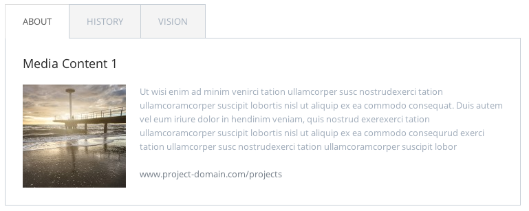
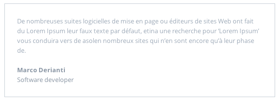

RENO is multipurpose WordPress WooCommerce theme suitable for companies or individuals. RENO is retina ready, translation ready, parallax ready and much more. It includes 6 Awesome Sliders (Layer Slider, Slider Revolution, Nivo Slider, Sly Slider, Refine Slider and Flex Slider). It is a great way to present your work at the highest level. It is based on popular Twitter Bootstrap 3 framework. This theme uses Visual Composer and the latest HTML5 and CSS3 technologies. You save extra $82 for premium content included in RENO theme.
For more information about how to set up WPML plugin, please read this Getting started guide. WPML plugin is not included with the theme.
If you want to use e-shop features with the theme, you can install Woocommerce plugin from automatic plugin installator, which is launched after the theme activation. Alternatively, you can launch it from Appearance > Install plugins.
For more information how to setup Woocommerce, please read this Getting started guide.
Navigate to 'Theme options' menu to adjust theme settings
Theme options > General settings
Set category of your portfolio posts. Children of this category will be displayed as filter for portfolio.
Theme options > General settings
Choose layout of the blog.
Theme options > Styling options
Set the primary theme color. This color will be applied to all colored elements.
Theme options > Styling options
Set the background color of the whole page.
Theme options > Styling options
Here you can set default and hover color for links.
Theme options > Header options
Here you can upload logo for the page.
You can set font family, font weight, font size and color for body and all headings. You can choose from all Google fonts.
Here you can set links to social networks displayed in footer. Leave the input blank, if you don't want to display specific icon.
Shop layout - select tempate of product listing
Show clients (Brands) on shop page - Check this option if you want to display clients slider (posts in 'Clients' menu) on the shop page.
Show filter - Check this option if you want to display sorting filter on product listing pages.
Products per page - Set number of products displayed per page.
Footer Text - text displayed on the left side in the footer.
Address heading - Heading for middle column of the footer
Address Text - Text displayed in the middle column of the footer
Contact heading - Heading of the right column of the footer
Phone - Insert your phone numbers
Web and mail - Insert your web and mail.
Copyright - Insert copyright text
Site author - Insert site author text
Social icons - Check this option if you want to display social networks icons in the footer.
Items in portfolio are custom post type Portfolio. To add new reference:
To show portfolio on page, select Portfolio from Content element list in page Visual composer editor.
To add a new slide:
To show slider on page, select Clients from Content element list in page Visual composer editor.
To add new team member:
To show team member on page, select 'Team member' from Content element list in page Visual composer editor.
To add a new slide:
To show slider on page, select 'Posts slider' from Content element list in page Visual composer editor.
Click Visual composer button in page editor to enable Visual composer.
In the Visual Composer editor mode you'll have "Add element" button, which you should click or drag to the working canvas, to add content block or row to your page. Clicking the "Add element" button will show the content element selection menu. Content blocks are divided into categories (Show all, Content, Social, Structure, WordPress Widgets).
Rows are used to divide your page into the logic blocks with columns, columns later will hold your content blocks. Rows can be divided into the layouts (eg. 1/2 + 1/2, 1/3 + 1/3 + 1/3, and so on). Your page can have unlimited number of rows. To change row's position, click and drag row's drag handler (top left row's corner) and drag row around (vertical axis).
Columns are part of the row and they hold your content elements inside them. Columns can be reordered. Click and drag column around (horizontal axis). That way you can group elements in logical groups and then drag them around with your mouse (to re-position).
This is a list of available content elements that can be placed on the working canvas or inside of the columns. Think of them as bricks. With those bricks you are building your layout. Most of the content elements have options, to set them click pencil icon. To save changes click save button.
You can access options of the row by clicking pencil icon on the right.
Full width - set this option to Yes, if you want full width row. Useful for slider or parallax.

Slider types:
Flexslider
Sly slider
Refine slider
Parallax slider
Type: Icon on left
Type: Icon on top
Use this for adding vertical space.
Type: with image
Type: without image

If you want to use this element, you need to have al least 1 team member added in Team menu.
If you want to use html features, in post/page edit screen select "Text" tab and insert your code.
Buttons, Tables
Button
1 2 3 4 5 | <!-- Button --> <button class="btn">Button</button> <!-- Button with Icon --> <button class="btn"><i class="fa fa-check"></i> Button</button> |
1 2 3 4 5 6 7 8 9 10 11 12 13 14 15 16 17 18 19 20 21 22 23 24 25 26 | <table class="table table-bordered"> <thead> <tr> <th>Head 01</th> <th>Head 01</th> <th>Head 01</th> </tr> </thead> <tbody> <tr> <td>Data 01</td> <td>Data 01</td> <td>Data 01</td> </tr> <tr> <td>Data 02</td> <td>Data 02</td> <td>Data 02</td> </tr> <tr> <td>Data 03</td> <td>Data 03</td> <td>Data 03</td> </tr> </tbody> </table> |
Font Awesome is 100% scalable icon pack.
Example markup for an icon:
1 | <i class="fa fa-facebook"></i> |
This template comes with these CSS files:
css/bootstrap.min.css
css/flexslider.css
css/nivo-slider.css
css/prettyPhoto.css
css/font-awesome.min.css
css/refineslide.css
css/animate.css
css/jquery.mCustomScrollbar.css
css/style.css
css/style-dark.css
css/colors/blue.css
css/colors/dark-blue.css
css/colors/green.css
css/colors/olive.css
css/colors/orange.css
css/colors/orange-light.css
css/colors/violet.css
css/colors/yellow.css
css/bootstrap-override.css
nivo-themes css files 4
css/bootstrap.min.css
Twitter bootstrap framework. A base twitter bootstrap CSS files, which defines various elements like columns, navigation, tabs, icons, forms and buttons.
css/jquery.mCustomScrollbar.css
Custom Scrollbar stylesheet file.
css/flexslider.css
Flex Slider stylesheet file.
css/nivo-slider.css
Nivo slider stylesheet file.
css/prettyPhoto.css
Prettyphoto stylesheet file.
css/animate.css - http://daneden.me/animate/
CSS3 animation style sheet .
css/refineslide.css
Refine slider stylesheet file.
css/font-awesome.min.css (+ font-files)
This file includes custom font which is being used for all icons which you can see in this template. More information about Font Awesome 100% scalable icon pack can be found at http://fortawesome.github.com/Font-Awesome.
css/blue.css
color style
css/style.css or css/style-dark.css
Main RENO theme stylesheet file (uncompressed version). To make any changes to this template, you should only need to modify this file.
css/bootstrap-override.css
This file is not an official part of twitter bootstrap, it contains few overrides of media queries of original theme.
This template comes with these Javascript files:
jquery.js
Fonts, Icons, Photos and Source Files
We've used the following files.
Google Web Fonts – Open Sans
Google Web Fonts – Fauna One
Font Awesome - http://fortawesome.github.com/Font-Awesome
Layered Photoshop PSD file of Home
http://www.flickr.com/photos/fiddleoak
http://www.flickr.com/photos/astragony
http://www.flickr.com/photos/anieto2k
http://www.flickr.com/photos/markjsebastian
Images are not included in template
Thank you for purchasing RENO theme. In case of any questions related to this template, we will to get back to you as soon as we can. We do not provide any warranty, however we are always here to help.
Best regards
entiri s.r.o.
v1.1 - 04 March 2014
- added Woocommerce 2.1 support
- added header info bar
- added multiple portfolio support
- added more options to portfolio
- added UberMenu support and 3rd level menu
- minor css fixes
v1.0 - 13 Februar 2014
- initial version